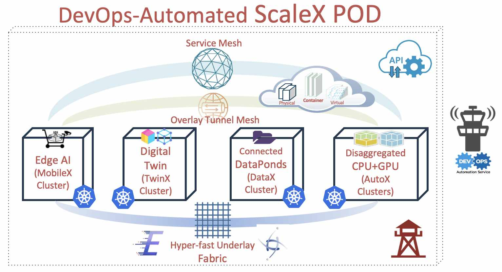

"자동화된 방식으로 통합 운영하는 확장 가능한 Cloud-Native 연구 인프라 협업"

ScaleX POD는 MobileX, TwinX, AutoX, DataX 클러스터로 구성된 멀티-클러스터 클라우드 인프라로 자동화된 운영 및 관리를 통해 GIST AI 융합학과(AI 대학원) 구성원들에게 연구/교육에 필요한 유연한 인프라를 원클릭으로 제공하는 포털입니다.